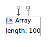

Connecting Figures
For figures that are intended to be connected to each other,
connection creation assistants can be used. When hovering your
mouse over a figure to be connected, connection handlers will
appear as shown below.

If both the source and target figures already exist on the
diagram, you can directly connect them in one of two ways:
- If the selected figure is to be the connection
source, you can then connect to a target figure by
clicking on the box on the outgoing arrow and dragging to the
target.
- If the selected figure is to be the connection
target, you can click on the box on the incoming arrow
and drag to the source figure.
An alternative way to make connections is as follows:
- If the selected figure is to be the source figure,
click on the box connected to the connection handle's outgoing
arrow and drag to empty portion of the canvas. You will then be
prompted to create allowed target figures, or to select from
existing figures on the diagram.
- If the selected figure is to be the target figure,
click on the box connected to the connection handle's incoming
arrow and drag to empty portion of the canvas. You will then be
prompted to create allowed source figures,
An example connection menu for source figure is shown
below.

As you may have discovered by now, you can also create a
connection to a Note figure. While this is a great way to help
document your model, keep in mind that notes are associated
with the diagram only and are not part of the domain model
itself.
Once connected, the target figure will have the arrow
connected to it. An example connection is shown
below.